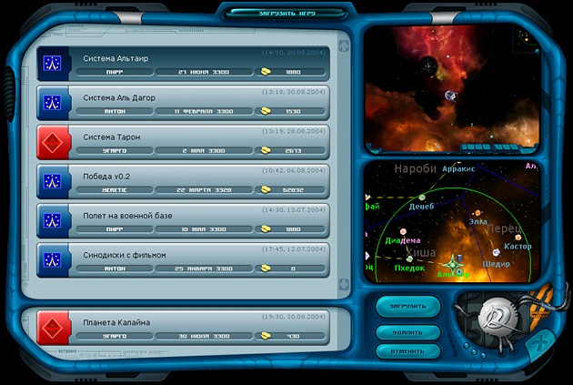

Руководство рейнджера > Экран
главного меню > Загрузить игру
|
Руководство рейнджера > Экран
главного меню > Загрузить игру
|
| Загрузить игру Здесь вы можете загрузить одну из своих ранее сохраненных игр. Также можно загрузить автоматическое сохранение, в котором записана ваша последняя успешная посадка на планету (всегда располагается в самом нижнем отдельном слоте). Кроме того, вы можете удалить те сохраненные игры, которые вам больше не нужны. |

|
Чтобы загрузить игру: • Дважды кликните по нужному слоту или выберите мышкой нужный слот и нажмите кнопку "Загрузить". Примечание. В верхнем правом углу каждого слота расположено время и дата данного сохранения. Файл пошагового сохранения называется TurnSave (прим. задается в настройках игры). Быстрая загрузка - клавиша F8 (прим. сначала нужно сделать быстрое сохранение - клавиша F5). Чтобы удалить ненужную игру: • Выберите мышкой слот с ненужной игрой и нажмите кнопку "Удалить". Сохранение игры происходит в этом же экране, только кнопка "Загрузить" сменяется на "Сохранить". Сохраняя игру, вы можете давать ей любое название. Все сохраненные игры находятся в папке Save, в каталоге с игрой и файлы имеют те же названия, что и в игре. В папке Save вы также можете удалять ненужные игры или переименовывать их. Нажатие клавишей Shift + Backspace позволяет стирать сразу весь текст в название сейва. В правой части окна загрузки располагаются два экрана: верхний показывает экран игры, на котором вы сохранились, а нижний - расположение системы, в которой вы находились в момент сохранения. |